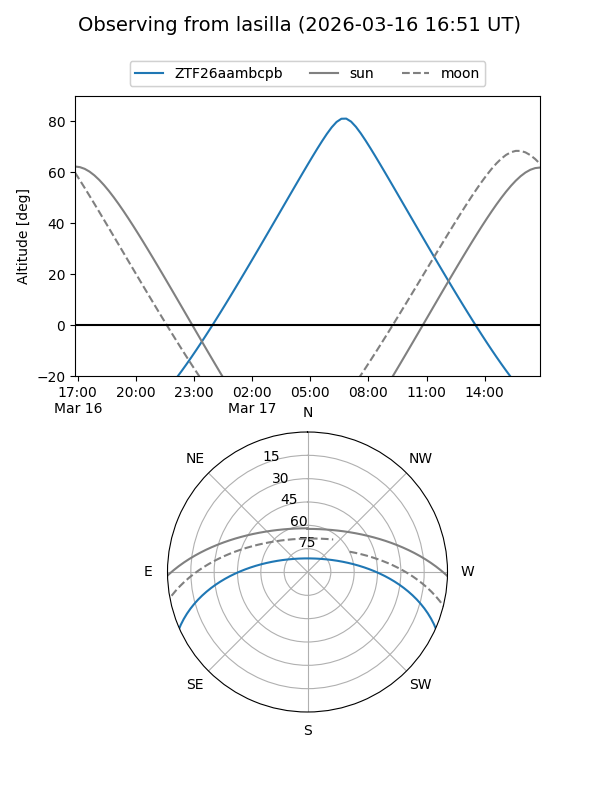
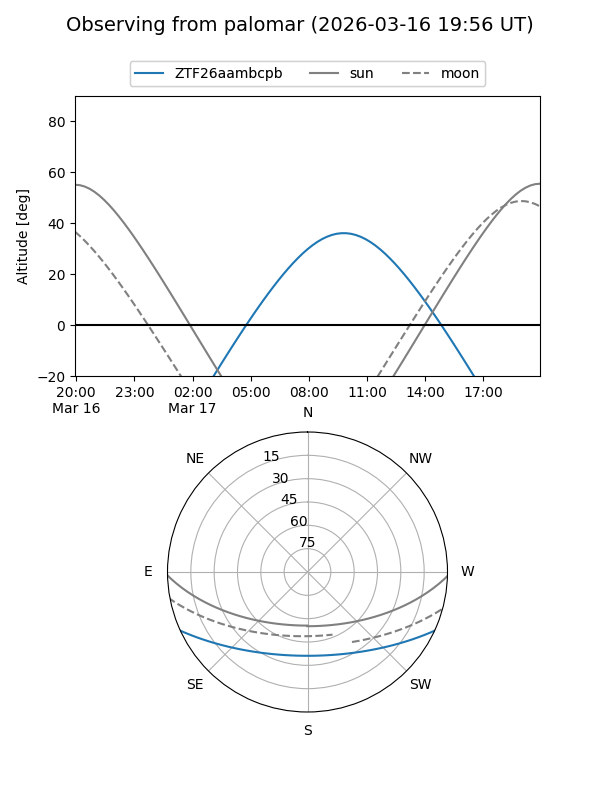

ZTF26aambcpb
Target ZTF26aambcpb at 2026-03-16 13:10
Aliases and brokers:
FINK: link
Lasair: link
ALeRCE: link
alt names
ZTF26aambcpb (ztf,fink_ztf)
Coordinates:
equatorial (ra, dec) = 204.8669,-20.37696
equatorial (HMS+DMS) = 13:39:28.06,-20:22:37.05
galactic (l, b) = (317.9288,+41.09194)
Flags:
Photometry:
last ztfg=16.37
1 ztfg detections
Lightcurve
Visibility


Additional plots